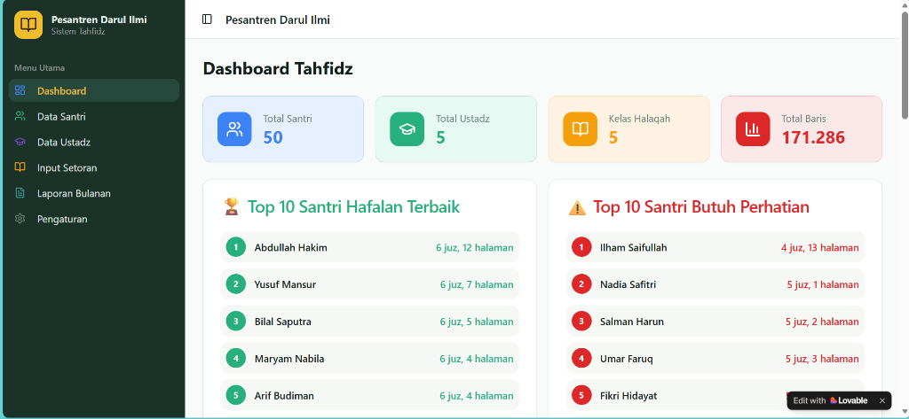
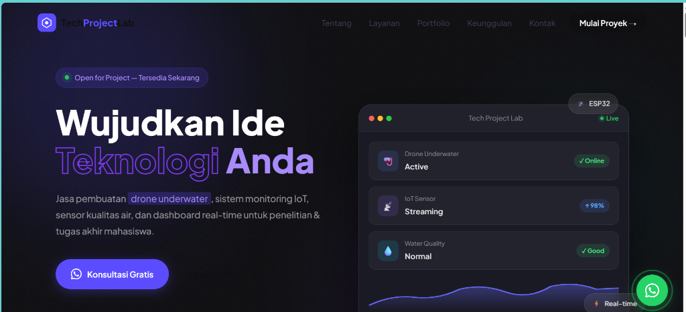
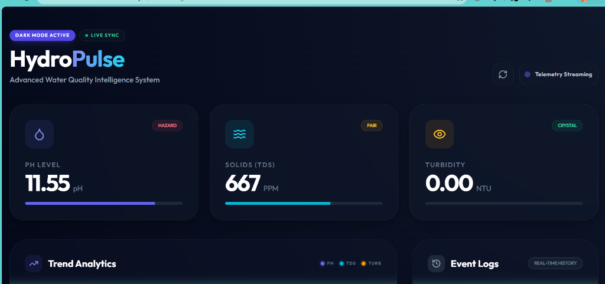
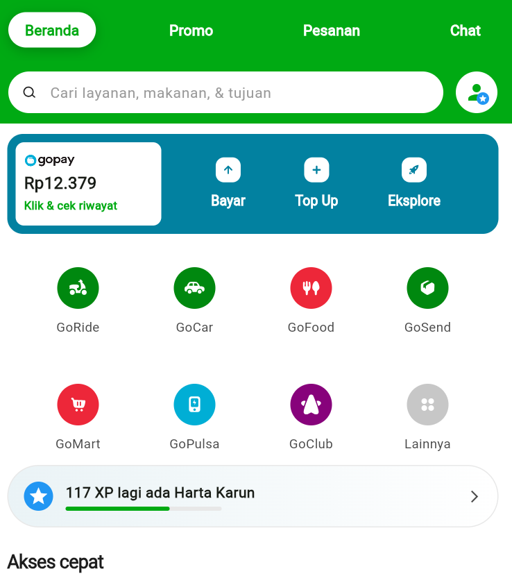
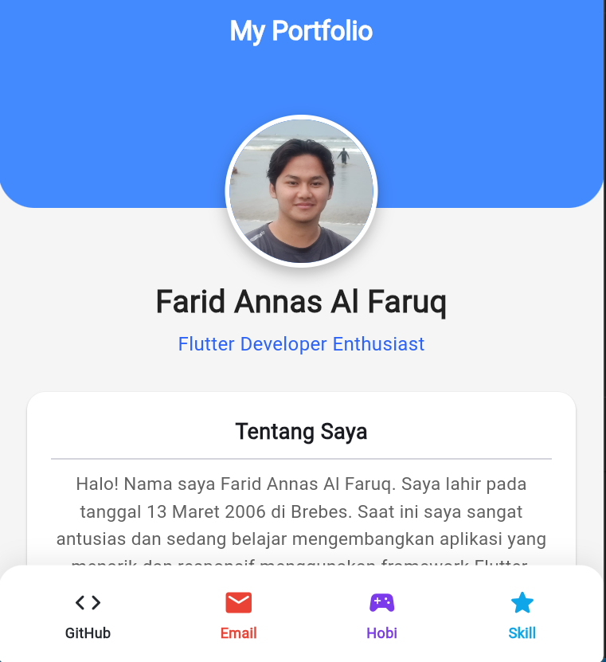

Cisco Networking Academy
JavaScript Essentials 1
Telah berhasil menyelesaikan kursus JavaScript Essentials 1 dari Cisco Networking Academy yang bekerja sama dengan OpenEDG JavaScript Institute.
Buka Link Sertifikat →IoT Developer & Web Engineer
Mahasiswa Politeknik IDN — bersemangat dalam membangun solusi berbasis teknologi, mulai dari Internet of Things, sistem embedded, hingga aplikasi web full-stack.

Halo! Saya Farid Annas Al Faruq, mahasiswa aktif di Politeknik IDN yang memiliki minat besar di bidang teknologi, khususnya pengembangan web dan Internetof Things (IoT)
Saya telah mengerjakan berbagai proyek mulai dari sistem monitoring sensor, drone underwater untuk keperluan pemantauan bawah air, hingga aplikasi web berbasis full-stack. Saya percaya teknologi dapat memberikan dampak nyata bagi kehidupan sehari-hari.
Teknologi dan alat yang saya kuasai dalam membangun solusi digital dan perangkat keras.
Pencapaian dan sertifikasi relevan yang telah saya peroleh.
Telah berhasil menyelesaikan kursus JavaScript Essentials 1 dari Cisco Networking Academy yang bekerja sama dengan OpenEDG JavaScript Institute.
Buka Link Sertifikat →
Sertifikat ini adalah bukti resmi yang diberikan kepada Farid annas al faruq atas keberhasilannya menyelesaikan dan lulus dari kelas "Belajar Dasar AI" (Kecerdasan Buatan) di platform pembelajaran Dicoding.
Buka Link Sertifikat →
Lulus kelas 'Belajar Dasar Cloud dan Gen AI di AWS' dari Dicoding. Langkah awal yang mantap untuk mulai mengimplementasikan teknologi cloud dan AI dalam pengembangan aplikasi.
Buka Link Sertifikat →
Kredensial resmi dari Microsoft yang membuktikan pemahaman dasar tentang konsep-konsep machine learning."
Buka Link Sertifikat →
Sertifikat kelulusan dari Simplilearn sebagai bukti penguasaan fundamental CSS untuk pengembangan antarmuka web."
Buka Link Sertifikat →
Sertifikat kelulusan dari Simplilearn sebagai bukti penguasaan fundamental dalam full-stack development.
Buka Link Sertifikat →Beberapa proyek yang telah saya kerjakan, mulai dari aplikasi web hingga sistem IoT.

Aplikasi berbasis web untuk membantu para penghafal Al-Qur'an dalam mencatat dan memantau progres hafalan mereka. Menggunakan metode Sabaq, Sabqi, dan Manzil untuk manajemen hafalan yang lebih terstruktur.
Lihat Project →
Landing page profesional untuk menampilkan layanan jasa pembuatan alat teknologi dan IoT. Dirancang dengan tampilan modern, responsif, dan dioptimalkan untuk konversi pelanggan.
Lihat Project →
Sistem drone bawah air yang dilengkapi dengan sensor untuk pemantauan kondisi lingkungan bawah laut secara real-time. Data sensor ditransmisikan ke dashboard monitoring berbasis web.
Lihat Project →
Website kafe dengan tampilan modern yang menampilkan produk trending, menu store, dan informasi tentang kafe. Dilengkapi fitur pencarian dan navigasi yang intuitif untuk pengalaman pengguna yang optimal.
Lihat Project →
Aplikasi mobile Flutter pertama dengan tampilan terinspirasi dari Gojek. Menampilkan fitur GoPay, GoRide, GoFood, GoSend, dan berbagai layanan lainnya dengan UI yang familiar dan intuitif.
Lihat Project →
Aplikasi portfolio pribadi yang dibangun dengan Flutter. Menampilkan profil, tentang saya, dan navigasi ke GitHub, Email, Hobi, serta Skills dalam satu aplikasi mobile yang bersih dan elegan.
Lihat Project →Tertarik untuk bekerja sama atau sekadar ngobrol tentang teknologi? Jangan ragu untuk menghubungi saya melalui platform di bawah ini.
💬 Mulai Percakapan